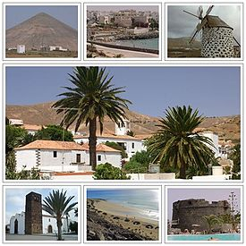

Fuerteventura es una isla española del archipiélago de Canarias, situada en el océano Atlántico, a 97 km de la costa noroeste del continente africano. El 26 de mayo de 2009 fue declarada en su totalidad reserva de la biosfera por la Unesco. Pertenece a la provincia de Las Palmas, una de las dos que componen Canarias, comunidad autónoma de España. La capital de la isla es Puerto del Rosario (Puerto Cabras hasta 1956), donde se encuentra el Cabildo Insular, que es el gobierno de la isla. La isla tiene una población de 110.299 habitantes (2017),1 es la cuarta isla más poblada del Archipiélago Canario. Con una superficie de 1.659,74 km², Fuerteventura es la isla más extensa de su provincia, la segunda de Canarias y la de mayor longitud del archipiélago. Es, desde el punto de vista geológico, la isla más antigua de las Islas Canarias.
